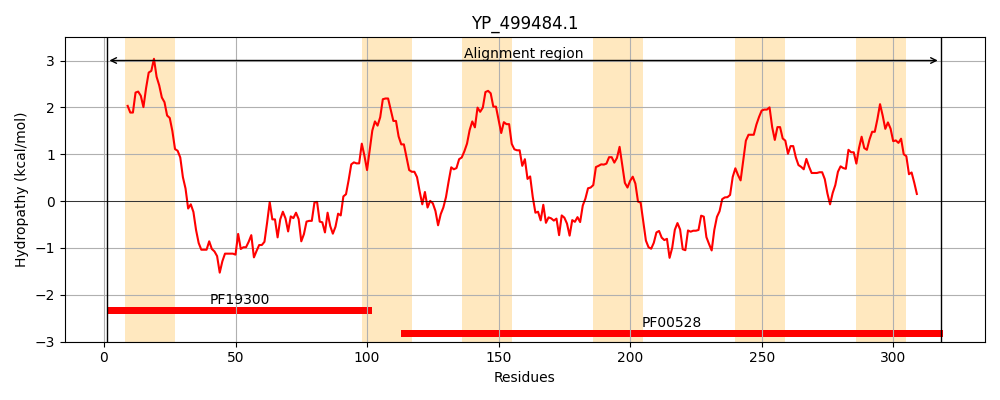
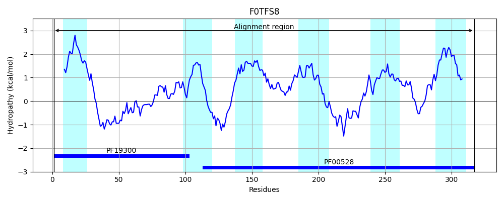
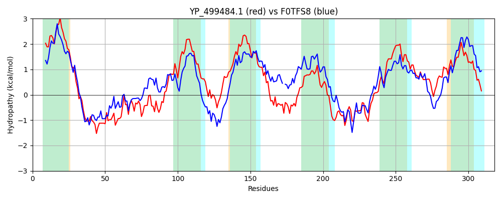

Hit Accession: F0TFS8
Hit TCID: 3.A.1.5.32
Hit Description: gnl|BL_ORD_ID|4120 gnl|TC-DB|F0TFS8|3.A.1.5.32 Oligopeptide transport protein OS=Lactobacillus acidophilus (strain 30SC) GN=LAC30SC_07300 PE=3 SV=1
Mach Len: 318
e:0.000000
Query TMS Count : 6
Hit TMS Count: 6
TMS-Overlap Score: 5.800000
Predicted Substrates:CHEBI:46953;alpha-D-galactoside
BLAST Alignment:
Score: 744 , Bit scores: 291 bits, E-value: 7.7e-98, Alignment length: 318, Percentage identity: 47
Query: 1 MIKLILKRLGLMIPLLILISIVVFSLAIIQPGDPFSDLQNGKIKQEAINAQREKLGLNDSIPHQYIRWVNHVIHGDLGESIKYKRPVIDVIEERIPNTILLGAMSLIITYIISFALGITSGRYSYSLTDYTVQIFNYLMLAIPSFIAGVFAIFIFSFELQWFPFQGSVDINLKEGTFEYYMSKIYHTFLPAFTLGLLSTAGYIQYLRNDIIENSKKDYVLTARSKGLSMNKIYNKHILRNSLIPIITFLGADIVSILGGAVITETIFSYNGIGKLFLESVIGQDYPLMMALTLFFSFLGLLGNLISDITYGFIDPRIR 318
M K IL+RL +MIP LI++S++VF LA + PGDPFS N + I A + GL D QY RWV ++ HGDLG S PV+ +I +R NT L ++ I+TY I+ LGIT+GR+ D +VQIFNY+ LA P F+ + +++F F L WFP GSV N G + S++YH LPA L++T G +QYLR I++N +DYV TARSKG+ N +++KHILRNSL+PI FLG I +L G++I E++FSY G+GKLFL+S+ +DY + AL L F L L+GNL+SDI IDPRIR
Sbjct: 1 MWKTILRRLLIMIPQLIILSLLVFLLAKMMPGDPFSGSINPNTDPKQIEALKRAAGLYDPWYVQYFRWVGNLFHGDLGTSYIQHVPVVSLIADRANNTFWLSLLTTILTYSIAIPLGITAGRHQDEWQDTSVQIFNYITLATPGFVFYILGLWLFGFTLGWFPISGSVSANAS-GFWGVLGSRLYHMILPAVLYALITTTGIVQYLRTGIVDNKVEDYVRTARSKGVPENVVFHKHILRNSLLPIAAFLGNTITGLLSGSMIIESVFSYPGMGKLFLDSISQRDYTTLTALILIFGILTLIGNLLSDIIMSIIDPRIR 317 | Protein Hydropathy Plots: |
|---|
|  |  |
Pairwise Alignment-Hydropathy Plot:
|
|---|
|  |